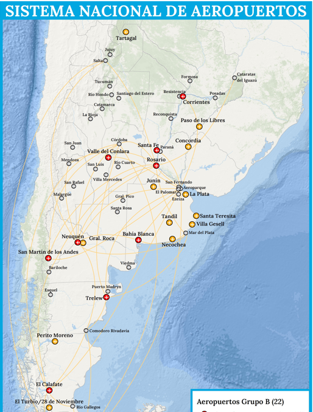
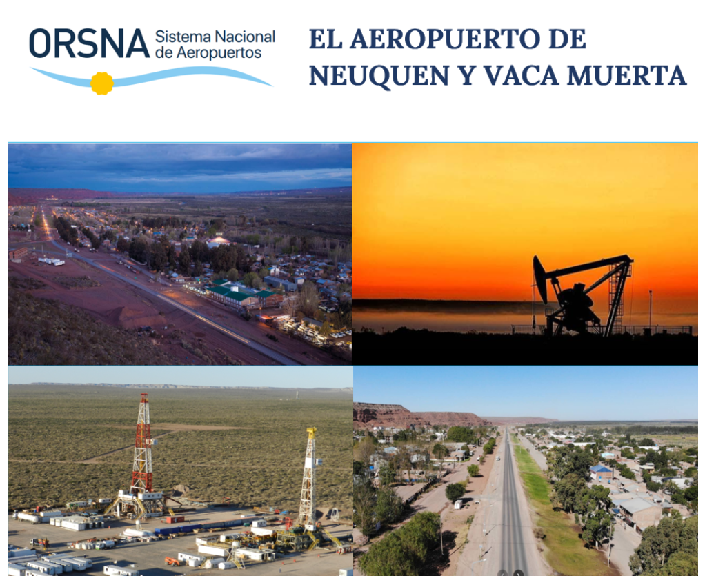
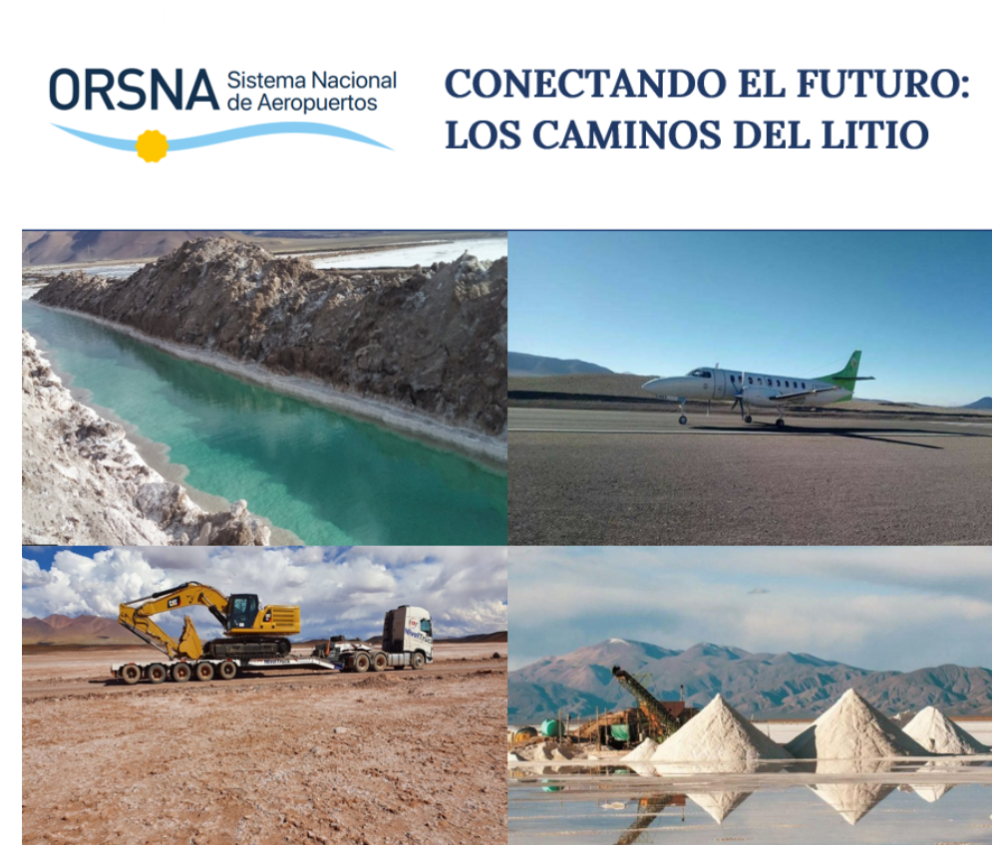
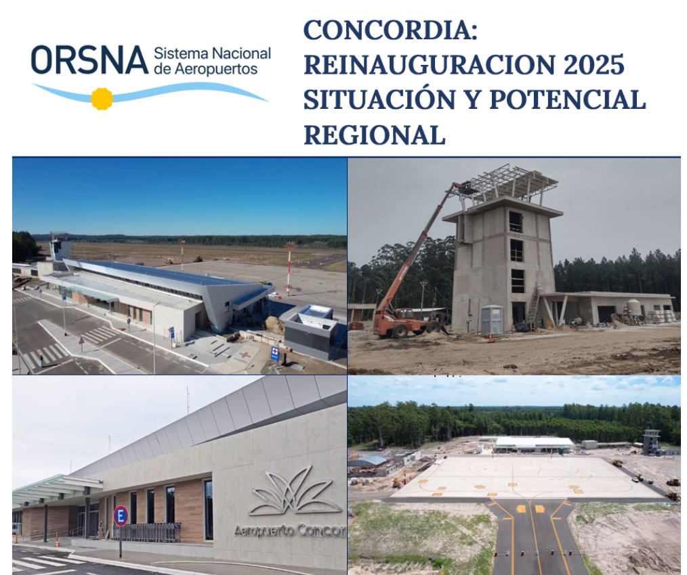

Grupo B
Aeropuertos Grupo B
Datos clave de aeropuertos del grupo B con vuelos comerciales regulares
Abrir informe
Datos clave de aeropuertos del grupo B con vuelos comerciales regulares
Abrir informe
El transporte aéreo cumple funciones clave para la industria hidrocarburífera y su logística regional.
Abrir informe Abrir en PDF
Análisis de la conectividad aérea asociada al desarrollo minero en el triángulo del litio.
Abrir informe
Nueva etapa del aeropuerto como motor del desarrollo regional y la integración binacional.
Abrir informe Abrir en PDFGeneral Pico recuperó los vuelos comerciales regulares tras años sin operaciones.
Abrir informe